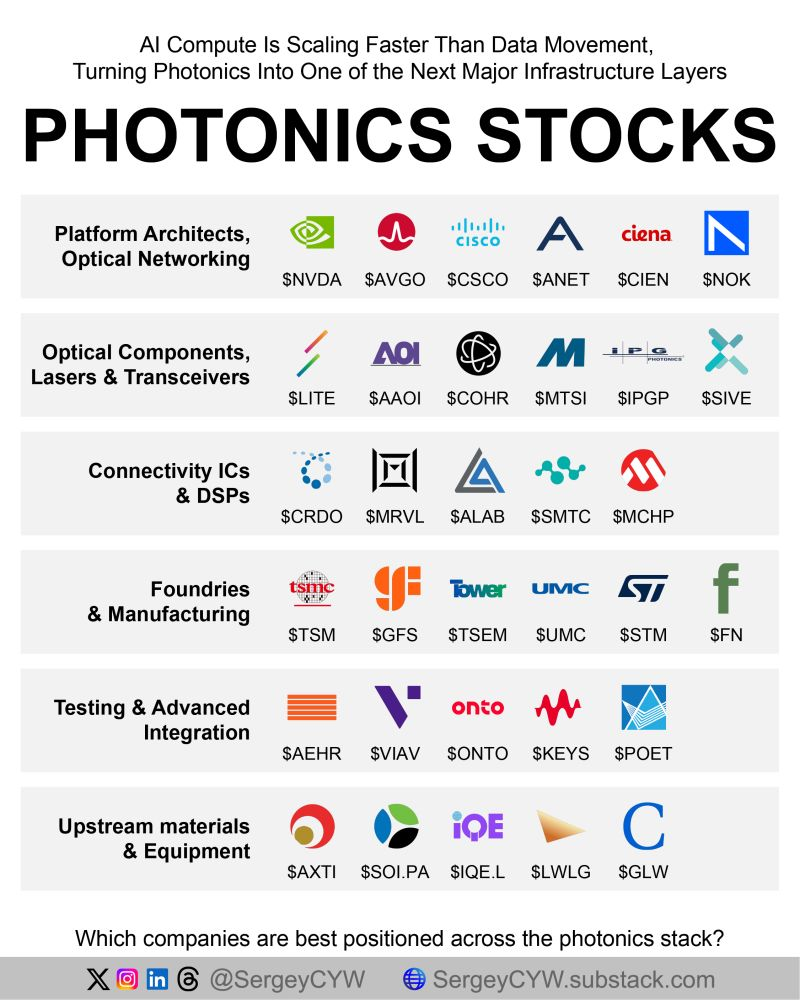

Photonics — AI optical interconnects
AI compute is scaling faster than data movement. Moving bits with light — photonics — is becoming core infrastructure for bandwidth, reach, and power efficiency inside large GPU clusters.
Why optics matter for AI infrastructure
Training and serving large models means packing thousands of accelerators into racks and rows, then keeping them fed with data. The chips got faster; the wires between them are the bottleneck.
Inside a data center, chips talk over electrical links on copper for short distances. As speeds climb toward hundreds of gigabits per second per lane, copper hits hard limits: signal loss over distance, crosstalk, and watts burned just to push electrons a few meters. That is why AI factories already use optical fiber for most rack-to-rack and hall-scale links, and why the industry is pulling optics closer to the chip.
- Bandwidth. Optical interconnects carry more bits per second in less physical space — essential when GPUs spend more time waiting on data than computing.
- Reach. Light stays clean over tens or hundreds of meters where copper becomes lossy and power-hungry. That lets operators build larger non-blocking fabrics across rows and buildings.
- Power. At high line rates, the energy per bit of long electrical paths rises sharply. Optics (especially when lasers and modulators sit nearer the switch or accelerator package) can cut interconnect power — a first-class constraint in multi-megawatt AI halls.
- Copper’s ceiling. Short-reach copper remains useful inside a board or package, but scale-up and scale-out fabrics increasingly leave copper behind beyond a meter or two.
Most links still use pluggable optical transceivers that snap into the faceplate of a switch or network interface card. The next step is co-packaged optics (CPO): putting the optical engine on the same package as the switch or accelerator ASIC, shortening the electrical hop and improving power and density. Silicon photonics — building optical waveguides and devices in chip-like processes — is a main manufacturing path for that shift. Pluggables will not vanish overnight; expect a multi-year mix as CPO ramps on the highest-bandwidth tiers.
The investment map below is a curated stack: who designs the platforms and networks, who builds lasers and modules, who ships the high-speed chips that drive them, who fabricates and assembles, who tests and integrates, and who supplies materials upstream. Private specialists (for example optical chiplet vendors) matter too; this page sticks to listed names you can research in public markets, with a few extras where they clearly strengthen a layer. For the ~2027–2028 optical bottleneck after packaging and HBM ease, see Scarcity timeline.
Scarcity timeline ~2027–2028
After power, advanced packaging, and high-bandwidth memory (HBM) ease, optical interconnects are widely expected to become the dominant bottleneck for AI clusters around 2027–2028. Copper runs out of runway for the bandwidth those fabrics need; lasers, optical engines, indium phosphide (InP) wafers, fiber, and optical digital signal processors (DSPs) have to scale with the clusters.
This is the same handoff sketched on the parent Hardware → Scarcity page. The names below are the public-market points of the optical pinch — roles and how the market is currently discussing “what’s priced in,” not buy or sell calls.
Phrases like “priced in,” sales multiples, and “partially / largely” describe how equity narratives around these tickers are often framed today. They are not recommendations, fair-value estimates, or a view that any name is cheap or expensive for you.
| Company | Role in the pinch | Shortage window | How the market often frames it |
|---|---|---|---|
| Lumentum LITE | Lasers and optical engines for data-center / AI links | Dominant ~2027–2028 | Scarcity narrative often described as priced in aggressively; ~29× sales cited as a valuation signal in market commentary — context only |
| Coherent COHR | Lasers and optical engines (broader photonics franchise) | Dominant ~2027–2028 | Similar laser / engine story to Lumentum; narrative often treated as largely priced in — compare stories, not a ranking |
| AXT AXTI | Upstream InP wafers / compound substrates for lasers and detectors | Dominant ~2027–2028 | Specialty materials; often called partially priced — cyclicality makes the scarcity story harder to read cleanly |
| Corning GLW | Optical fiber and specialty glass / materials | Dominant ~2027–2028 | Broader industrial franchise; AI fiber demand is incremental — often framed as partially reflecting the theme |
| Marvell MRVL | Optical DSPs and connectivity silicon inside modules and fabrics | Dominant ~2027–2028 | Semi-style multiple and design-win driven; optical DSP upside often described as partially to largely in the price |
-
LumentumLITE
Lasers / optical engines · ~2027–28
Builds the lasers and optical-engine pieces that turn electrical signals into light for high-speed data-center links. As copper hits power and reach limits inside AI halls, demand for those light sources is what the scarcity timeline is about. Market chatter has treated the scarcity story as priced in aggressively (including ~29× sales as a signal people cite) — that is how the tape is discussed, not a recommendation.
-
CoherentCOHR
Lasers / optical engines · ~2027–28
Another major lasers-and-optics supplier spanning communications and industrial photonics. In the same optical-engine scarcity window as Lumentum; commentary often calls the narrative largely priced in. Useful as a peer lens on the same bottleneck, not as a “pick one” framing.
-
AXTAXTI
InP wafers · upstream · ~2027–28
Makes compound-semiconductor substrates, including indium phosphide (InP), that sit under many laser and detector epi stacks. Upstream of the module brands — if laser volume must scale, wafer substrate capacity matters. Specialty materials and cyclicality often leave the scarcity story only partially reflected in how the stock is discussed.
-
CorningGLW
Optical fiber / materials · ~2027–28
Produces the optical fiber and specialty glass that carry those photons between racks, halls, and sites. AI fabrics add fiber and related materials demand on top of a much broader glass and materials business, so the AI-fiber theme is usually described as incremental and only partially in the price.
-
MarvellMRVL
Optical DSPs / connectivity silicon · ~2027–28
Ships the high-speed chips — especially optical DSPs and related connectivity silicon — that condition and decode signals inside optical modules and cloud fabrics. Design wins and a semiconductor-style multiple dominate how people talk about it; the optical-DSP scarcity angle is often called partially to largely priced in.
Full layer blurbs (including these five among peers) sit in Who-is-who by layer below. Parent hardware timeline: packaging & HBM first, then optics.
CPO timelines
Plain-language roadmaps for co-packaged optics (CPO) on AI scale-out switches, scale-up optical I/O, COUPE, external light sources, and standards. Full narrative (copper vs light, today’s stack, endgame who-stays / who-is-sidelined on the pure optical-I/O path): CPO & optical I/O deep-dive. Interactive clickable schematics (cells → explainer → Companies): hardware / timelines. Not investment advice.


Interactive schematics: hardware / timelines. Deeper context and company roles: hardware / Photonics / CPO.
Stack map
Starter landscape of public names across six photonics layers for AI data movement. Tickers on the graphic include a SiTime label that should read SITM (not SIVE).

Who-is-who by layer
Each company in one or two plain sentences — what they actually do in this stack. Spellings and roles are orienting notes, not recommendations.
1. Platform architects & optical networking
Systems and silicon vendors that set how AI clusters connect — switches, fabrics, and optical networking gear that sit above the module and laser suppliers.
-
NVIDIANVDA
Designs AI accelerators and the networking that ties them together, including InfiniBand and Ethernet fabrics and, increasingly, silicon-photonics / CPO switch platforms for very high-bandwidth AI clusters.
-
BroadcomAVGO
Dominant merchant supplier of high-radix Ethernet switch ASICs used in cloud and AI networks; a lead voice on CPO switch silicon that integrates optics next to the switching chip.
-
CiscoCSCO
Builds routers, switches, and optical transport systems for campus, data-center, and long-haul networks — the gear that moves traffic between racks and between facilities.
-
Arista NetworksANET
Sells cloud- and AI-oriented Ethernet switches and software widely used in hyperscale and enterprise AI fabrics, with heavy dependence on high-speed optical pluggables at the faceplate.
-
CienaCIEN
Specializes in optical transport and coherent networking — the long-reach “pipes” that interconnect data centers and metro/long-haul routes with dense wavelength multiplexing.
-
NokiaNOK
Provides IP routing and optical network systems (including assets from its Infinera acquisition) used by carriers and large operators for high-capacity optical transport.
2. Optical components, lasers & transceivers
The physical light path: lasers, modulators, detectors, and the pluggable or engine modules that turn electricity into photons and back.
-
LumentumLITE
Makes lasers, optical components, and modules used in data-center and telecom links, including high-speed transceiver building blocks and related photonics parts. One of the names most often tied to the ~2027–2028 optical scarcity window for lasers and optical engines.
-
Applied OptoelectronicsAAOI
Designs and manufactures fiber-optic transceivers and related components aimed at data-center and cable broadband customers.
-
CoherentCOHR
Broad photonics supplier (lasers, materials, and optical components) spanning industrial lasers and communications optics used in networking and sensing. Peers with Lumentum in the lasers / optical-engine scarcity timeline.
-
MACOMMTSI
Sells high-speed analog and RF / optical semiconductors — drivers, amplifiers, and related chips that sit next to lasers and detectors in optical modules.
-
IPG PhotonicsIPGP
Best known for high-power fiber lasers in industrial manufacturing; relevant as a deep laser-physics and fiber-laser franchise adjacent to the broader photonics supply chain.
-
SiTimeSITM
Builds silicon MEMS timing chips. Precise clocks are unglamorous but essential for synchronizing high-speed SerDes and optical links in AI and networking gear.
3. Connectivity ICs & DSPs
The electronics that condition, serialize, and decode ultra-fast signals — digital signal processors (DSPs), SerDes, retimers, and connectivity chiplets between compute, memory, and optics.
-
CredoCRDO
Focuses on high-speed connectivity chips — SerDes, retimers, and related silicon that help copper and optical links run cleanly at today’s AI line rates.
-
MarvellMRVL
Supplies data-infrastructure silicon including electro-optics DSPs, Ethernet devices, and custom ASICs widely used in optical modules and cloud networking. Optical DSP / connectivity role in the ~2027–2028 pinch is covered in the scarcity brief above.
-
Astera LabsALAB
Builds connectivity ICs and retimers for AI servers — keeping PCIe, CXL, and Ethernet links stable as rack-scale GPU systems grow denser.
-
SemtechSMTC
Through its Signal Integrity / Tri-Edge and related lines, sells optical transceiver ICs (laser drivers, TIAs, CDRs) used inside high-speed modules.
-
Microchip TechnologyMCHP
Diversified microcontroller and analog supplier with timing, Ethernet, and optical-networking IC families used around data-center and communications systems.
-
MaxLinearMXL
Adds a coherent / high-speed DSP angle: communications SoCs and modem/DSP silicon used in optical transport and related broadband links.
4. Foundries & manufacturing
Who fabricates photonics-friendly silicon and who assembles complex optical modules at scale.
-
TSMCTSM
The leading logic foundry; also a key platform for silicon photonics and advanced packaging approaches that enable co-packaged optical engines next to switch and AI silicon.
-
GlobalFoundriesGFS
Specialty foundry with established silicon-photonics process offerings used by optical-engine and transceiver chip designers.
-
Tower SemiconductorTSEM
Analog and specialty foundry known for silicon-photonics and RF/optical process flavors used by communications chip companies.
-
UMCUMC
Pure-play foundry serving specialty and mature-node logic — including processes relevant to mixed-signal and photonics-adjacent chips.
-
STMicroelectronicsSTM
IDM with silicon-photonics technology used in optical communications and sensing, plus broader analog/power silicon around systems.
-
FabrinetFN
Precision optical manufacturing partner — assembles and tests complex optical modules and systems for many branded transceiver and networking vendors.
5. Testing & advanced integration
Tools and platforms that verify high-speed optics and help integrate photonic chips into usable engines and packages.
-
Aehr Test SystemsAEHR
Builds burn-in and test systems for semiconductors, including wafer-level and packaged parts used where reliability screening matters for advanced chips.
-
Viavi SolutionsVIAV
Provides optical test and measurement gear and network assurance tools used to qualify fiber links, modules, and production lines.
-
Onto InnovationONTO
Process-control and inspection equipment for advanced semiconductor packaging and manufacturing — relevant as optical engines and chiplets get packaged more densely.
-
Keysight TechnologiesKEYS
Electronic and optical test instruments (scopes, BERTs, network analyzers) used to design and validate multi-hundred-gigabit electrical and optical links.
-
POET TechnologiesPOET
Develops optical interposer / photonic integration platforms aimed at lowering cost and complexity of assembling light engines for data-center modules.
6. Upstream materials & equipment
Substrates, wafers, specialty materials, and glass/fiber inputs that sit beneath lasers, PICs, and cable plants.
-
AXTAXTI
Produces compound-semiconductor substrates (such as gallium arsenide and indium phosphide families) used to grow the epitaxial material for many lasers and detectors. Upstream InP wafer angle in the scarcity timeline.
-
SoitecSOI.PA
French materials company known for engineered substrates, including silicon-on-insulator wafers used in RF and silicon-photonics device flows.
-
IQEIQE.L
UK supplier of epitaxial wafers — the crystalline layers grown on substrates that become the active regions of compound-semiconductor photonics and RF chips.
-
Lightwave LogicLWLG
Develops electro-optic polymer materials intended for high-speed modulators — an earlier-stage materials bet on alternatives to traditional inorganic modulators.
-
CorningGLW
Major producer of optical fiber and specialty glass — the physical medium for almost every photonic link between racks, buildings, and cities. AI fiber demand is incremental on a broader franchise; see scarcity timeline.